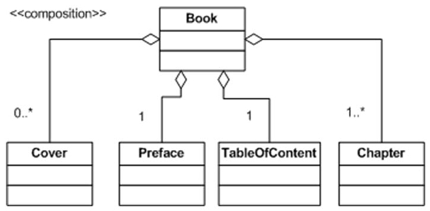
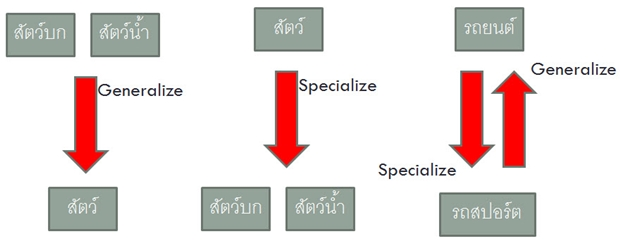
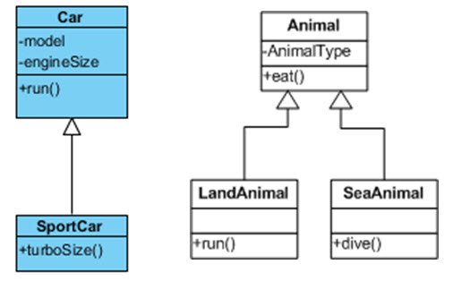

หน้าหลัก
|
บทเรียน
|
แบบทดสอบ
|
สมัครสมาชิก
|
เกี่ยวกับเรา
บทที่ 2 Abstraction, Encapsulation และ Modularity
บทเรียน
บทที่ 1
บทที่ 2
บทที่ 3
บทที่ 4
บทที่ 5
บทที่ 6
บทที่ 7
บทที่ 8
บทที่ 9
บทที่ 2 Abstractions หน้าที่ 5
2.5.2 Composition
จากตัวอย่างที่ผ่านมาพบว่า Aggregation ของ Classroom ที่มีต่อ Student, Teacher และ TeachingMaterial กับ Aggregation ของ Building ที่มีผลต่อ Classroom มีความแตกต่างกัน คือ ถ้า Classroom ไม่มีอยู่ และนักเรียนไม่ได้อยู่ใน Classroom
นักเรียนก็ยังคงสภาพความเป็นนักเรียน ไม่ได้สูญหายไปไหน การดำรงอยู่ของ Classroom ไม่มีอิทธิพลต่อการดำรงอยู่ของ Student
แต่ใน Aggregation ของ Building ที่มีผลต่อ Classroom นั้น Classroom จะมีอยู่ได้ต้องอาศัยการมีอยู่ของ Builder เสมอ ถ้า Builder ไม่ดำรงอยู่ Classroom ก็จะไม่ได้ดำรงอยู่เช่นเดียวกัน การดำรงอยู่ของ Builder มีอิทธิพลต่อการดำรงอยู่ของ Classroom ซึ่ง Aggregation ในลักษณะนี้ เป็น Aggregation ประเภทพิเศษ เรียกว่า Composition
ตัวอย่าง 2.6
หนังสือ ประกอบด้วย สองปก คือ ปกหน้าและปกหลัง หนึ่งคำนำ หนึ่งสารบัญ และเนื้อหาบทต่างๆ

2.6 Generalization Abstraction
Abstraction ใช้จำลองความสัมพันธ์ระหว่าง Class ที่อยู่ในระนาบเดียวกันและความสัมพันธ์ที่ต่างระนาบ เราได้รู้จักกับวิธีการสร้าง Class จาก Object ที่มีอยู่ และวิธีการสร้างความสัมพันธ์ระหว่าง Class ในเชิงที่ Class หนึ่งเป็นส่วนประกอบของอีก Class หนึ่ง ลองพิจารณาความสัมพันธ์ของ Class 2 Class ในบางกรณี เช่น “แมลงจำแนกเป็นแมลงบินและแมลงคลาน” จะพบว่า Aggregation Abstraction ไม่สามารถอธิบายความสัมพันธ์นี้ได้ เพราะแมลง ไม่ได้ประกอบด้วย แมลงบินและแมลงคลาน แต่แมลง จำแนกเป็น แมลงบินและแมลงคลาน ดังนั้นจึงมี Abstraction ใหม่ที่สามารถอธิบายความสัมพันธ์เชิง “จำแนกเป็น”
พิจารณาจากความเป็นจริงในโลก จะเห็นว่า สิ่งของหรือสิ่งมีชีวิตหลายๆ ชนิด เกิดจากการเพิ่มเติมคุณสมบัติพิเศษเข้าไป หรือบางสิ่งอาจจะเกิดจากการตัดทอนหรือละเลยคุณสมบัติบางอย่างออก เช่น รถสปอร์ต เกิดจากการเพิ่มระบบ Turbo และตัวถังแบบพิเศษเข้าไปในรถปรกติ ทำให้วิ่งเร็วขึ้น สัตว์บกและสัตว์น้ำ มีคุณสมบัติที่เหมือนกัน คือ มีชีวิต มีการเคลื่อนไหว เมื่อไม่คำนึงว่า สัตว์บกต้องอยู่บนบก และ สัตว์น้ำต้องอยู่ในน้ำ จะได้ Concept ใหม่ขึ้นมา เป็น Concept ร่วมของสัตว์บกและสัตว์น้ำ นั่นก็คือ Concept ของสัตว์
เราสามารถพิจารณาคุณสมบัติพิเศษ หรือละเลยคุณสมบัติพิเศษที่มีอยู่ใน Class ต่างๆ เพื่อทำให้เกิด concept ใหม่ ซึ่งมี concept เปลี่ยนไปจากเดิม เรียกว่า Generalization Abstraction
การให้ Concept ใหม่กับ Class หนึ่ง โดยละเลยหรือตัดคุณสมบัติพิเศษบางอย่างออกไป ทำให้ Class ดังกล่าวมีคุณสมบัติเป็นสามัญ (General ) เรียกว่า Generalize การให้ Concept ใหม่กับ Class หนึ่งที่มีอยู่แล้ว โดยพิจารณาเพิ่มเติมคุณสมบัติใหม่ๆ ให้ Class มีลักษณะพิเศษเพิ่มขึ้นเรียกว่า Specialize

การทำ Specialize เกิดจากการเพิ่มคุณลักษณะพิเศษบางอย่างให้กับ Class เดิมเพื่อให้เกิด Class ใหม่ที่พิเศษกว่า Class เดิม (SuperClass) ส่วน Class ที่เกิดจากการทำ Specialize เรียกว่า SubClass ในทาง OO นิยมเรียกกระบวนการ Specialize ว่า Inheritance
2.6.1 การอธิบาย Generalization ด้วย UML
ใช้สัญลักษณ์เส้นตรงมีหัวลูกศรสามเหลี่ยมใส ลากเชื่อมระหว่าง SuperClass และ SubClass โดยให้หัวลูกศรชี้ไปทาง SuperClass

2.6.2 Inheritance และ Visibility
การทำ inheritance นั้นมีผลโดยตรงต่อ Visibility ของ Attribute/Methods ที่ถูกถ่ายทอดจาก SuperClass ไปยัง SubClass ก่อให้เกิดกฎการถ่ายทอด ดังนี้
1. Public Attribute/Function จะถ่ายทอดมาเป็น Public ของ SubClass เสมอ
2. Private Attribute/Function จะถ่ายทอดมาเป็น private ของ SubClass แต่ไม่สามารถเข้าถึงได้โดย Function ที่มีอยู่ใน SubClass
3. Protected Attribute/Function จะถ่ายทอดมาเป็น Protected ของ SubClass การเข้าถึง Attribute หรือ Function ทำได้โดยผ่าน Function ใดๆ ของ SubClass โดยไม่คำนึงถึงว่า Function นั้น ได้มาจากการ inherit หรือไม่
2.6.3 Multiple Inheritance
การทำ Inherit จาก SuperClass ที่มากกว่า 1 ตัว เพื่อให้ได้ SuperClass ที่มีคุณสมบัติพิเศษเพียงตัวเดียวหรือมากกว่า เรียกว่า Multiple Inheritance
2.6.4 Polymorphism
ในการทำ Inheritance บางกรณี เช่น Class รถตีนตะขาบ เกิดจากการ Inherit จาก Class รถยนต์ ซึ่ง Class รถตีนตะขาบได้รับการสืบทอดจาก Class รถยนต์ ได้แก่ วิ่งเดินหน้า วิ่งถอยหลัง และเลี้ยว วิ่งไปข้างหน้าและถอยหลัง รถตีนตะขาบและรถยนต์ ทำงานเหมือนกัน แต่การเลี้ยว ทำงานต่างกัน เพราะรถยนต์ให้พวงมาลัยในการเลี้ยว แต่รถตีนตะขาบใช้การหยุดล้อข้างที่เลี้ยว
2.7 Modularity
การให้หลักการต่างๆ ที่เกี่ยวข้องกับ Abstraction แต่ละประเภทรวมทั้ง Encapsulation ทำให้พิจารณาและจำลองสิ่งต่างๆ รอบตัวเราอยู่ในรูปของหน่วยย่อยที่สามารถจัดการง่าย มีคุณสมบัติ มีความสามารถดำเนินกิจกรรม และมีขอบเขตหน่วยย่อยดังกล่าว คือ Object
หลักการที่พิจารณาปัญหาที่มีอยู่ทั้งหมดให้อยู่ในรูปของหน่วยย่อย ที่มีอิสระในตัวเอง และการหาความสัมพันธ์ระหว่างหน่วยย่อย เรียกว่า Modularity
Modularity ทำให้ปัญหาที่มีขนาดใหญ่ ได้ถูกแยกแยะออกเป็นปัญหาเล็ก ที่มีความสัมพันธ์กัน การทำความเข้าใจและจัดการกับปัญหาเล็กๆ เหล่านั้น ย่อมทำได้ง่ายกว่าการทำความเข้าใจและจัดการปัญหาใหญ่ทั้งหมด
Previous
1
2
3
4
5
OBJECT ORIENTATION
Copyright © 2014 All Right Reserved.
CONTACT US
Hot line : 036-364487
E-mail : bosskung@gmail.com